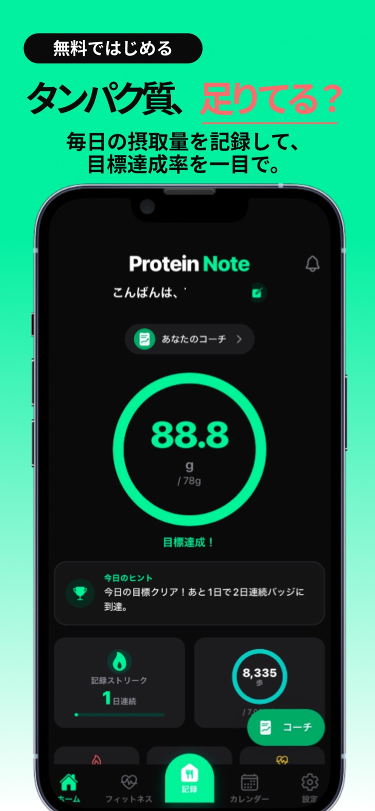
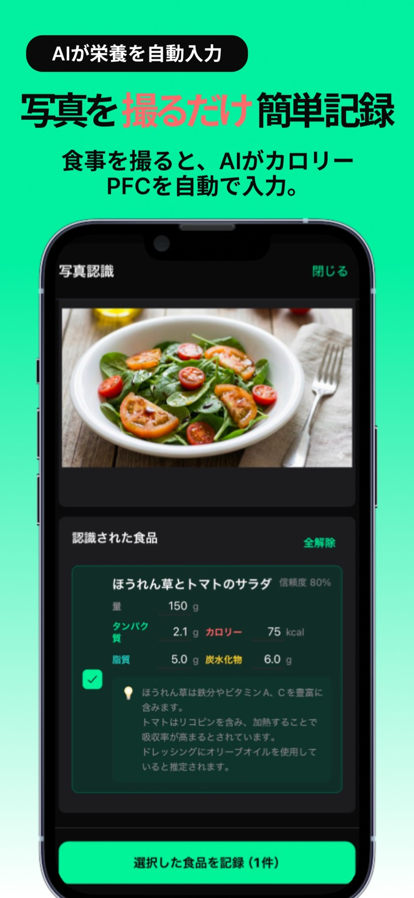
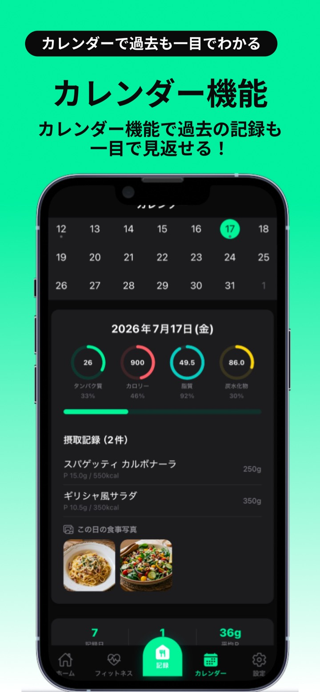
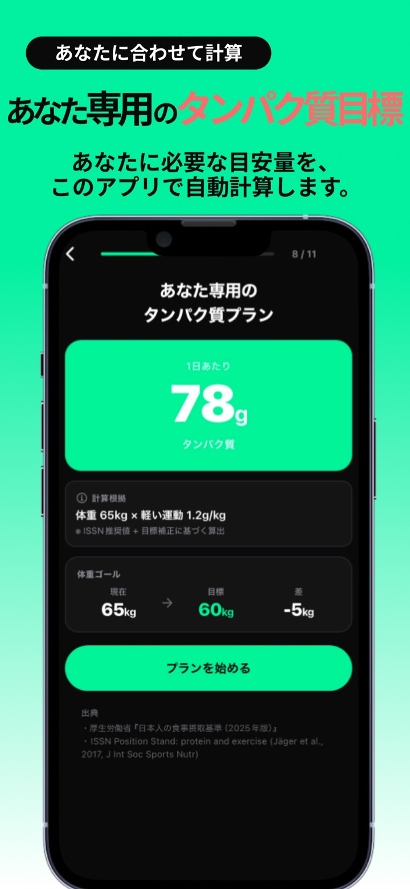
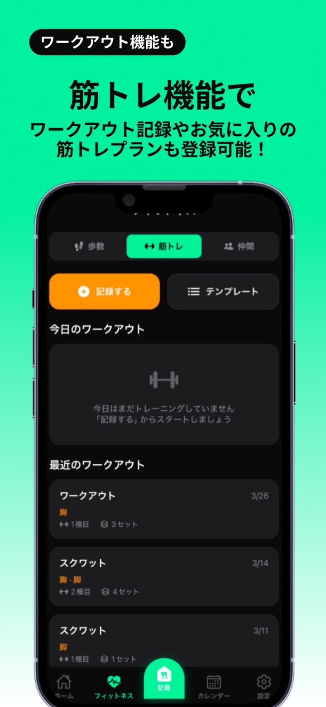
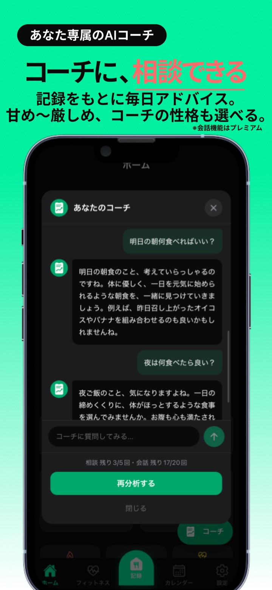
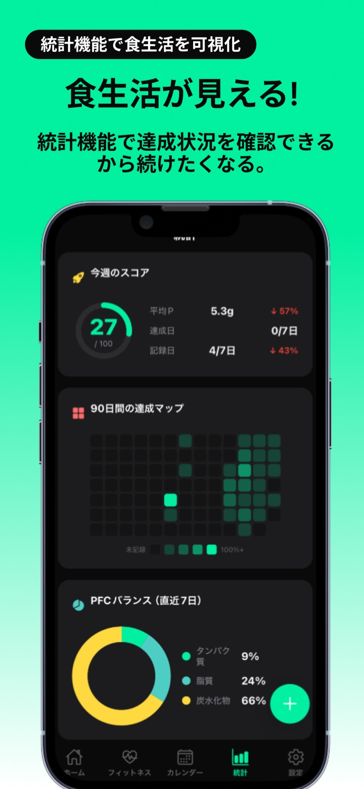
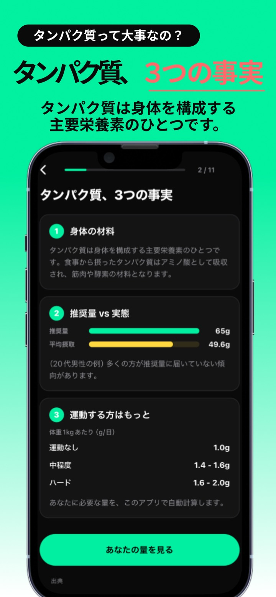
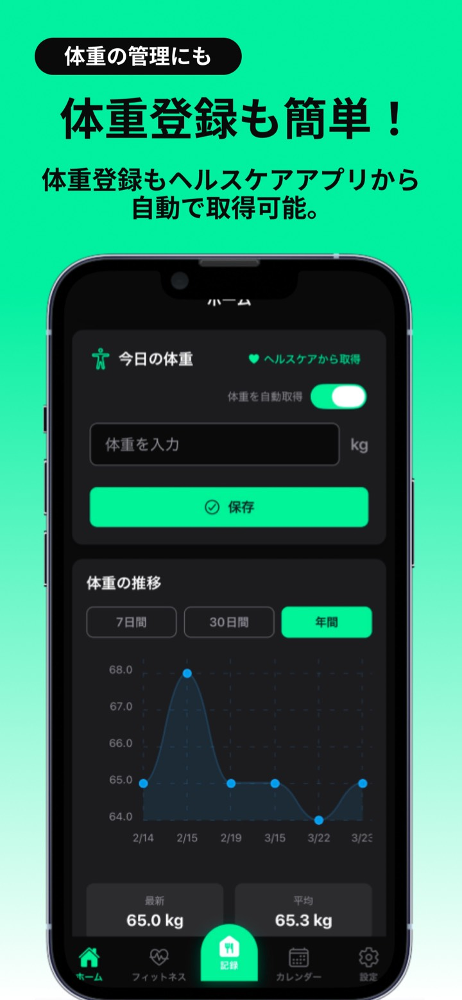
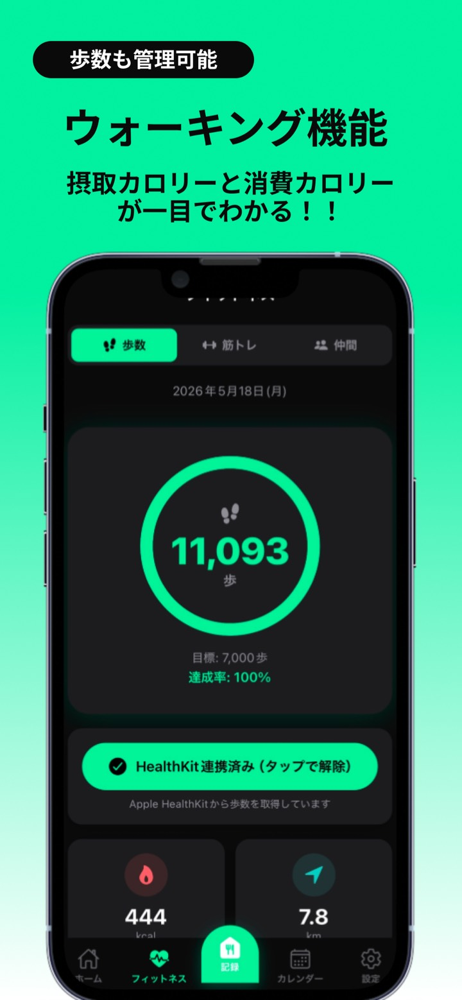

タンパク質、足りていますか？
もう怒られない。
やさしいAIと、続く栄養管理。
撮るだけ、話すだけ、ワンタップ。すぐに記録できて、AIコーチがあなたの頑張りを褒めてくれる。だから、続く。
無料ではじめる・アカウント登録不要・初月無料でプレミアムも試せる

栄養管理アプリ、
こんな理由でやめませんでしたか？
食事の記録が面倒で続かない
タンパク質が足りてるかわからない
筋トレと食事を別アプリで管理するのが手間
完璧じゃない食事のたびに、罪悪感を感じてしまう
ちゃんと頑張ってるのに、アプリに怒られて凹む
プロテインノートは、怒りません。
完璧じゃない日も、記録したことをまず褒める。
継続を支える、やさしいAIコーチです。

AI写真認識
撮るだけで、PFC自動計算。
食事の写真を撮るだけで、AIが食品を識別してタンパク質・カロリー・脂質・炭水化物を数秒で記録。市販品はバーコードを読み取るだけ。
- 複数の食品も一括で認識
- バーコード読み取りにも対応
- 654食品のデータベースから検索もできる
🎙️「ベンチ80キロ10回」
記録しました
ベンチプレス 80kg × 10回
ボイスアシスタント
「ベンチ80キロ10回」
って言うだけ。
声だけで食事も筋トレも記録完了。トレーニング中でも、料理中でも、ハンズフリー。音声は端末内でテキストに変換されるから安心です。
- 「鶏むね肉200g食べた」で食事を記録
- スマホを触れない場面でも記録が途切れない

フォトログ × カレンダー
忙しい昼は撮るだけ。
あとで、まとめて登録。
食事フォトログなら、写真を撮っておいて後から記録できます。カレンダーには食事写真と栄養素が日別に並び、過去の食事も一目で見返せます。
- 撮って後で登録。だから記録が途切れない
- 写真はサーバーに送られず、端末の中だけ
- 日別のPFC達成率もカレンダーで確認

あなた専用の目標
必要なタンパク質量を、自動計算。
体重・目標・運動量から、あなたに必要な1日のタンパク質量を約1分で自動算出。厚生労働省の食事摂取基準とISSNの推奨値に基づいています。
- 減量・増量・維持の目標に合わせて調整
- あとは毎日、リングを満たすだけ

筋トレ記録
筋トレも、同じアプリで。
60種目に対応。重量・レップ・セットの記録、お気に入りのテンプレート、レストタイマー、部位別の分析まで。食事と筋トレの管理がこれ1つで完結します。
- テンプレートでいつものメニューを一発登録
- 推定消費カロリーも自動計算

AIコーチ
「今日も頑張ったね」
から始まる継続。
記録をもとに毎日アドバイス。「明日の朝何食べればいい？」と相談もできる。コーチの性格は、甘め〜厳しめの5段階から選べます。
- まず褒める。だから凹まない
- 栄養もトレーニングも相談できる

統計・可視化
続けた分だけ、見えてくる。
週間スコア、90日間の達成マップ、PFCバランス。頑張りが見えるから、続けたくなる。バッジとストリークが継続を後押しします。
- 体重・歩数もグラフで一目瞭然
- 連続記録ストリークで習慣化
あなたに合うコーチを、
甘め〜厳しめの5段階から。
どの性格でも、否定や人格攻撃をしないよう設計しています。変わるのは、応援の温度だけ。
激甘
「もう天才！今日も最高すぎる！」
何をしても全力で褒めてくれる甘々コーチ。とにかく肯定されて続けたい人に。
やさしい
「今日もよくがんばったね」
優しく寄り添って励ましてくれる。穏やかに無理なく続けたい人に。
普通
「いいペースです。数字は順調ですね」
フラットで自然体。ほどよい距離感がいい人に。
熱血
「いくぞ！今日の頑張り、ちゃんと見てたぞ！」
声が大きい体育会系。全力で鼓舞してくれる熱い相棒がほしい人に。
ストイック
「それでいい。次だ」
高い基準で淡々と導く硬派。結果に本気で向き合いたい人に。
性格はいつでも切り替えOK。今日の気分に合わせて変えられます。
あなたのコーチを選んで、今日からはじめよう。
まだまだ、できること。
ワンタップ記録
いつものプロテインや朝食は、一度登録すれば次からワンタップで記録完了。
食事フォトログ
忙しい時は撮って後で登録。写真は端末の中だけに保存されます。（v5.9新機能）
バーコード読み取り
市販品はバーコードをかざすだけで栄養成分を自動取得。
ヘルスケア連携
歩数・歩行距離・体重をHealthKitから自動取得。消費カロリーも自動計算。
友達とつながる
フレンドコードで友達を追加。ワークアウトにリアクションを送り合える。
バッジ・ストリーク
続けるほど貯まるバッジと連続記録。忙しい日は自動フリーズで守られる。



こんな人におすすめ
筋トレ・ボディメイク中の方
PFCバランスと筋トレ記録を1つのアプリで完結。ワンタップ記録でプロテイン摂取も秒で管理。
ダイエット中の方
カロリー・脂質・炭水化物を可視化。体重推移グラフで変化を実感。AI写真認識で記録の手間ゼロ。
健康管理をしたい方
歩数・体重・栄養バランスをまとめて管理。やさしいAIが食事の偏りを分析してアドバイス。怒られません。
まずは無料で、
ぜんぶの基本機能を。
無料プラン
¥0
- 食事・筋トレ・体重・歩数の記録
- 統計・グラフ・カレンダー
- AI写真認識 月30回
- ボイスアシスタント 1日1回
- AIアドバイス 1日1回
プレミアム
¥280/月（税込）
- AI写真認識 月180回
- ボイスアシスタント 月200回
- コーチとチャット 1日20回
- 広告非表示・CSVエクスポート
- カスタム食品・マイレシピ無制限
サブスクリプションはいつでも解約できます。
無料とプレミアムのくわしい比較を見る
| 機能 | 無料 | プレミアム |
|---|---|---|
| AI写真認識 | 月30回 | 月180回 |
| 食事フォトログ | 3件・7日保持 | 最大300枚 |
| AIアドバイス | 1日1回 | 1日5回 |
| コーチとの会話 | — | 1日20回 |
| ボイスアシスタント | 1日1回 | 月200回 |
| AI褒めコーチ | 定型文 | AI生成 |
| カスタム食品 | 10個 | 無制限 |
| マイレシピ | 3個 | 無制限 |
| カスタムテンプレート | 3個 | 無制限 |
| CSVエクスポート | — | 利用可能 |
| 広告 | あり | 非表示 |
| 友達の上限 | 10人 | 無制限 |
よくある質問
無料で使えますか？
はい。記録・筋トレ・統計などの基本機能は無料です。AI写真認識は月30回、ボイスアシスタントは1日1回まで無料で使えます。
プレミアムプランの料金はいくらですか？
月額280円（税込）で、初月は無料です。AI写真認識が月180回、ボイスアシスタントが月200回に増え、広告も非表示になります。いつでも解約できます。
アカウント登録は必要ですか？
不要です。ゲストモードで今すぐ始められます。ゲストモードのデータは端末内にのみ保存されます。
食事の写真はどこに保存されますか？
食事フォトログの写真は端末内にのみ保存されます。AI認識を実行したときだけ、その写真が認識処理のため外部AIサービスに送信されます。
「怒られない」とはどういう意味ですか？
多くの栄養管理アプリはカロリーオーバーを警告しますが、プロテインノートのAIコーチはまず頑張りを認めて褒めます。コーチの性格は甘め〜厳しめの5段階から選べ、どれを選んでも否定や人格攻撃はしません。
声だけで記録できますか？
できます。「ベンチ80キロ10回」「鶏むね肉200g食べた」のように話すだけで、筋トレも食事も記録できます。
Apple ヘルスケア（HealthKit）と連携できますか？
できます。歩数・歩行距離・体重をヘルスケアから自動取得し、消費カロリーの計算や体重グラフに反映されます。
Android版はありますか？
現在はiOS版のみ提供しています。
解約方法・データの引き継ぎなど、すべての質問（19問）はこちら。
今日の一食から、
始めよう。
アカウント登録なし。30秒でスタート。
あなたの頑張りを、ちゃんと褒めてくれるアプリです。
基本機能はすべて無料・初月無料でプレミアムも試せます